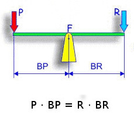
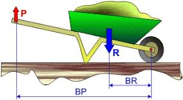
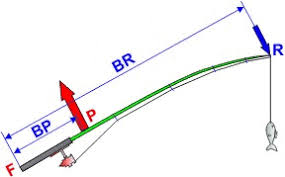

4 Palancas, Rozamiento y Leyes de Newton
Nombre:______________________________________________________________________________
| Si quieres ver estas hojas y todas las animaciones utilizadas en clase, entra en davidominguezroman.github.io/fichas-fuerzas/ |
Aunque las palancas las dais en Tecnología, vamos a hacer un breve recordatorio.
Una palanca es una barra rígida que gira alrededor de un punto de apoyo llamado fulcro. En las palancas siempre se cumple que:
\[ F_P\cdot b_P = F_R\cdot b_R, \]
Siendo:
- \(F_P\): fuerza potencia (la que se realiza para levantar el peso)
- \(F_R\): fuerza resistencia (la que ejerce la masa que se quiere levantar)
- \(b_P\): brazo potencia (distancia desde donde se aplica la fuerza motor al fulcro)
- \(b_R\): brazo resistencia (distancia desde la masa que se quiere levantar al fulcro)
Tenemos tres tipos de palancas:
| Primer género: el fulcro está entre la potencia y la resistencia |  |
| Segundo género: la resistencia está entre la potencia y el fulcro |  |
| Tercer género: la potencia está entre el fulcro y la resistencia |  |
1.- Indica de qué género son las siguientes palancas:
Unas tijeras:
Un cascanueces:
Unas pinzas de barbacoa:
2.- Alberto está jugando con su hermana pequeña, Marta, en un balancín. La distancia entre Marta y el fulcro es \(b_R = 50\text{cm}\), mientras que la distancia entre Alberto y el fulcro es \(20\text{cm}\). Si marta ejerce una fuerza sobre el balancín \(F_R = 200\text{N}\), ¿qué fuerza \(F_P\) tiene que ejercer Alberto?
Probablemente nunca te hayas parado a pensar por qué, dependiendo de por dónde se camine, es más fácil resbalarse. Esto se debe a la fuerza de rozamiento. Si observamos cualquier superficie o cualquier objeto bajo el microscopio, veremos que todo tiene una cierta rugosidad. Estas rugosidades se enganchan unas con otras, haciendo que sea más difícil mover un objeto. La fuerza de rozamiento es una fuerza que ejercen los materiales sobre los cuerpos y que SIEMPRE se opone al movimiento. Esta fuerza depende de dos factores:
La rugosidad: un suelo de cemento es más rugoso que el hielo, y por eso es más difícil arrastrar algo por el cemento que por el hielo. Así que, a más rugosidad más rozamiento.
El peso: cuanto mayor sea el peso que se apoya, mayor será el rozamiento.
3.- ¿Qué cuerpos sufrirán más rozamiento?
- Una masa de 4kg sobre cemento o una masa de 8kg sobre cemento:
- Una masa de 4kg sobre hielo o una masa de 4kg sobre tierra:
4.-¿Qué tendrá más rozamiento, una encimera de mármol o una tabla de madera?
Ya hemos visto algún la definición de fuerza y hemos visto los diferentes movimientos básicos de un cuerpo, pero… ¿qué leyes físicas gobiernan sobre esto? Isaac Newton enunció sus tres leyes para explicar cómo se mueven los cuerpos:
Primera ley (principio de inercia): todo cuerpo permanece en reposo o en movimiento rectilíneo uniforme mientras no actúe ninguna fuerza sobre él.
Segunda ley (principio fundamental): la aceleración de un cuerpo es directamente proporcional a la fuerza que actúa sobre él e inversamente proporcional a su masa.
\[ F=m\cdot a \]
- Tercera ley (principio de acción y reacción): si un cuerpo ejerce una fuerza sobre otro, este ejerce una fuerza igual, pero de sentido contrario, sobre el primero.
A partir de la segunda ley, podemos calcular el peso de cualquier masa. El peso, P, es la fuerza con la que un planeta atrae a una masa. Esta fuerza produce una aceleración, que llamaremos \(g\), quedando la ecuación:
\[ P=m\cdot g \]
5.- Si un conductor tiene un accidente y no lleva el cinturón puesto, ¿Por qué sale disparado?
6.- El 26 de marzo de 2024, en Baltimore, un barco carguero cuya masa \(m=95 128 000 \text{kg}\) chocó contra el pilar de un puente que había en la bahía, destruyendo el puente. El barco se movía a una velocidad de 7 nudos \(v_o = 3,6 \text{m}/\text{s}\) y tardó en parar \(10\text{s}\).
a) Calcula la aceleración que sufrió el barco al detenerse \(v_f = 0\text{m}/\text{s}\).
b) Calcula la fuerza que el puente ejerció sobre el barco.
c) ¿Por qué crees que el puente quedó destruido? Intenta explicarlo utilizando las leyes de Newton que hemos visto.
7.- La aceleración que sufre cualquier cuerpo que cae sobre la Tierra es \(g_{Tierra}=9,8 \text{m}/\text{s}²\). Calcula cuál será el peso de una masa \(m=200 \text{kg}\).
8.- Un satélite tiene un peso \(P=4705\text{N}\) en la Tierra. Datos: \(g_{Tierra} = 9,8 \text{m}/\text{s}²\), \(g_{Venus}=8,87 \text{m}/\text{s}²\).
a) ¿Cuál es su masa?
b) ¿Cuánto pesará en la superficie de Venus?